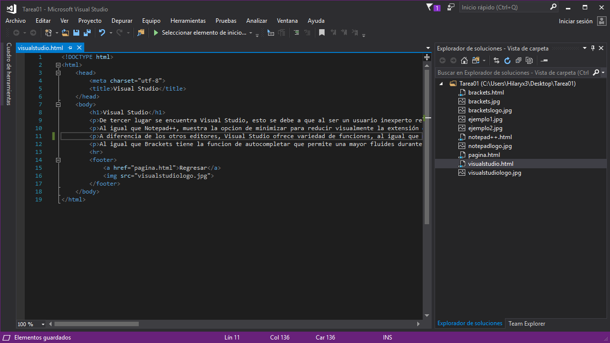

De tercer lugar se encuentra Visual Studio, esto se debe a que al ser un usuario inexperto resulta mas cómodo utilizar editores mas simples o faciles de entender para no presentar dificultad durante la realización del codigo, a diferencia de los dos editores anteriores (Brackets, Notepad++), Visual Studio presenta los archivos del lado derecho de la pantalla clasificados por carpeta, y no por nombre
Al igual que Notepad++, muestra la opcion de minimizar para reducir visualmente la extensión del código
A diferencia de los otros editores, Visual Studio ofrece variedad de funciones, al igual que notificaciones y la posibilidad de iniciar sesión. Además durante su instalación ofrece distintas posibilidades como Azure, Unity entre otras
Al igual que Brackets tiene la funcion de autocompletar que permite una mayor fluides durante la realización del código
